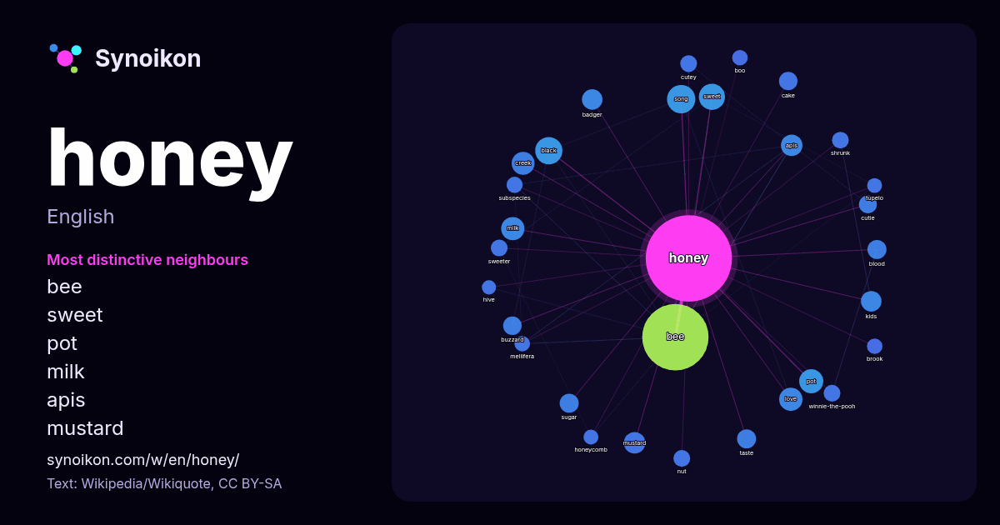

English · word of the day list
honey
The words found around it in 1538 instances from Wikipedia, Wikiquote, Hacker News.

Most distinctive neighbours
- bee 199×
- sweet 31×
- pot 28×
- milk 25×
- apis 24×
- mustard 24×
- badger 21×
- kids 18×
- buzzard 18×
- cake 17×
- taste 17×
- creek 17×
- cutie 17×
- sugar 16×
- cutey 15×
- winnie-the-pooh 15×
- sweeter 15×
- shrunk 15×
- nut 15×
- black 15×
× = how many times more often than in general Wikipedia text.
Most frequent neighbours
- bee 219
- american 45
- song 40
- black 37
- album 36
- sweet 34
- film 33
- species 31
- pot 29
- born 28
- love 27
- milk 27
- creek 26
- apis 23
- mustard 23
- band 22
- badger 21
- kids 21
- japanese 19
- land 19
In context
- Honey is a sweet and viscous substance made by several species of bees, the best-known of which are honey bees. Honey is made and stored to nourish bee Wikipedia snippets · Honey
- The honey badger (Mellivora capensis), also known as the ratel (/ˈrɑːtəl/ or /ˈreɪtəl/), is a mammal widely distributed across Africa, Southwest Asia Wikipedia snippets · Honey badger
- "Honey, Honey" is a song by the Swedish pop group ABBA. It was released as the second single in selected countries only, from their second studio album Wikipedia snippets · Honey, Honey
- Honey is a sweet, edible fluid produced by bees. Honey or Honeys may also refer to: Honey Lake, California Wikipedia snippets · Honey (disambiguation)
- A honey bee (also spelled honeybee) is a eusocial flying insect from the genus Apis of the largest bee family, Apidae. Honey bees are known for their construction Wikipedia snippets · Honey bee
- Mad honey is honey that contains grayanotoxins. The dark, reddish honey is produced from the nectar and pollen of genus Rhododendron and has both toxic Wikipedia snippets · Mad honey
- Honey Don't! is a 2025 neo-noir black comedy film directed by Ethan Coen, who co-wrote the screenplay with his wife Tricia Cooke. It is the second in Wikipedia snippets · Honey Don't!
- Honey trapping is a practice involving the use of romantic or sexual relationships for interpersonal, political (including state espionage), or monetary Wikipedia snippets · Honey trapping
More words
- art
- autumn
- bell
- bread
- bridge
- cat
- city
- climate
- clock
- death
- desert
- dog
- family
- food
- forest
- garden
- god
- gold
- health
- heart
- history
- horse
- island
- language
- life
- map
- mirror
- money
- mother
- mountain
- nature
- power
- rain
- road
- salt
- science
- shadow
- silence
- song
- star
- storm
- summer
- tea
- time
- train
- truth
- water
- winter
- work
Precomputed on 2026-10-09 with default settings (±5 words, medium corpus). The interactive map can refresh it with live data.